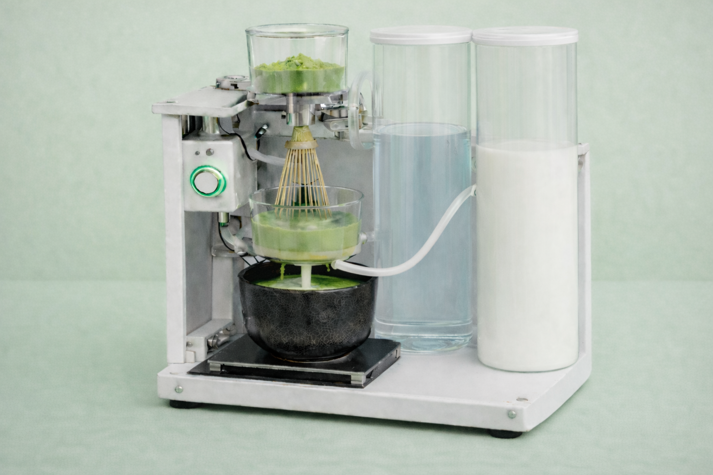

<div class="textcontainer">
<br></br>
<h3>Week 1: Final Project Proposal</h3>
<p class = "margin"></p>
Here are two ideas for my final project
<p class = "margin"></p>
<h4>Idea 1: Blooming Flower Dress</h4>
<p class = "margin"></p>
<div style="
display: flex;
justify-content: center;
gap: 24px;
margin: 24px 0;
flex-wrap: wrap;
">
</div>
For my final project, I thought of building an interactive dress with flower elements that physically bloom in response to a sound. When you clap once, the flowers open, and when you clap again, they close. I was drawn to this project because it combines my interests in fabrication and fashion.
<b>Functions of the Dress</b>
The dress will have several flower elements attached to it, which could either be positioned on the bodice or the skirt. Each flower will be able to open and close, similar to petals blooming. The open flower will reveal colorful petals on the inside. If not activated, the petals of the flowers remain closed and rather colorless externally to increase the surprise factor.
<b>Physical Design and Fabrication</b>
Each flower will be made up of multiple petals which are attached around a central point. I would plan to design the parts of the flowers using CAD software, most likely Fusion 360. The petals themselves could be laser cut from thin flexible material or 3D printed. The central hub of each flower will be 3D printed to hold the moving parts together.
When attaching the flowers I want to make sure to make space for the wiring without pulling or damaging the fabric. I might experiment with backing plates or small enclosures mounted onto the garment to allow for the electronics to be supported rather than relying on the fabric alone.
<b>Motion and Actuation</b>
Each flower module will be built around a central piece that holds individual petals. A small motor could pull on a thin wire connected to the petals so that the petals open. When the motor releases, the petals can return to their original closed position.
The simplest version will use a micro servo motor, since a servo lets me control position and move slowly. The servo horn can wind or pull the wire by rotating, and then reverse to release it. The petals themselves can be attached using small hinges or flexible joints, depending on what is easier to fabricate.
I will start by building and testing one flower module off the dress. Only after it opens and closes to allow for potential re-iteration.
<b>Clap Input</b>
The clap input could be translated through a little microphone module connected to the microcontroller. When one claps, the microphone module can send a signal. In code, I will look for a sharp spike above a chosen threshold rather than constant sound levels to prevent the blooming from being arbitrarily triggered. I will include a short lockout window after a clap is detected so that one clap does not register twice. Each clap could make the flowers transition from closed to open, or from open to closed. If the microphone ends up being too sensitive in noisy environments, I can adjust the threshold, add the lockout time, or place the microphone in a more protected location on the garment.
<b>The Programming</b>
The microcontroller code will serve to allow for the movement. For instance, the servo motors will slowly rotate to open the petals when a sensor threshold is crossed. The motors will turn back to close them after a brief pause.
Since the visual effect is crucial to the project, I intend to employ delays and gradual angle changes instead of sudden movements. The logic will be strictly reactive and time-based at first. I might try more expressive behavior, like flowers opening one after the other instead of all at once, if I have enough time and comprehension.
<b>Building the Flowers</b>
I would like to learn how to use the microcontroller to control a single servo motor. After that is successful, I will create a single flower and test its full motion outside of the dress. Next, I'll try using a button or other basic input to start the movement.
I won't expand the project to include more flowers until a single flower is dependable. In order to keep the garment wearable, I will then carefully consider placement on the dress, wire routing, and weight distribution.
<b>Potential Roadblocks</b>
There are many uncertainties surrounding this project. I don't know yet how durable the flower mechanisms will be and how comfortable it is to wear a dress with electronics attached. I also do not know how many flowers will be feasible. Therefore, I will try to plan for a minimal viable version of the project first which would basically consist of a single working flower that opens and closes reliably. Then, additional flowers will only be added if the system remains stable.
I already expect that the first versions of the flowers will not move smoothly (I would be happy if they moved at all:). For instance, petals could collide or some materials might be too heavy. Hence, I plan to iterate on the design by testing individual flowers before attaching them to the dress.
<b>Alignment With The Course</b>
I tried to think of a project that implements various parts of what we will learn throughout the semester, including digital fabrication, electronics, motors, sensors, and microcontroller programming into a single wearable system.
<p class = "margin"></p>
<h4>Idea 2: Matcha Making Machine</h4>
<p class = "margin"></p>

Another idea I was thinking about is an automated matcha machine. As someone who really likes matcha and makes it often I would appreciate the automation of the process. I would be curious to see how feasible it is to integrate the takeaways from the course and the idea of automating physical steps that include consumable liquids.
<b>Machine Functions</b>
The machine will have a base for the cup. Above the cup, there will be a matcha whisking mechanism to mix the matcha powder with water. Milk will be stored in a separate container so that it can be added to the cup through a tube. The machine will run when the user presses a button.
The machine could potentially follow a simple sequence. First, milk will be pumped into the cup through the tube for a set time. Subsequently, water and matcha powder will be dispensed into the mixing bowl. After that, the whisk motor will turn on and mix the matcha powder and water for a certain amount of time at a steady but slow rate. Finally, the motor will stop and the dispensing mechanism will turn on that allows for the matcha to flow into the cup with the milk or a certain amount of time. That way I can avoid trying to incorporate specific measuring features and instead test for the ideal timing of the flows. When the process is finished the machine will turn off.
<b>Building The Machine</b>
I thought of designing the physical structure of the machine using CAD software, like Fusion 360. The main parts I want to design and 3D print are a base that holds the cup in place, a vertical support that holds the whisk motor directly above the cup, and small structures that hold the milk tube steady so it does not shift while dispensing. My plan is to print simple versions of these parts, test them physically, and then adjust the designs.
<b>Electronics and Components</b>
The system will be controlled by a microcontroller. A physical push button connected to a digital input pin could serve as the input. Potentially, I could use a small DC motor that is controlled through a transistor as an output to drive the whisking mechanism. For dispensing milk and water, I could use a small pump that is connected to the tube. This component can also be controlled by the microcontroller.
<b>The Code</b>
I will start by writing programs that control one thing at a time, such as running the motor for a few seconds and then stopping it. After that, I can combine these pieces into a single program that runs the full sequence. When the button is pressed, the code will first check that the system is not already running. It will activate the milk dispenser, then the water and matcha poweder and turn on the whisk motor. Based on feasibility, it would be interesting to add a sensor that makes sure that the cup is on the board under the matcha dispenser.
<b>Potential Roadblocks</b>
As there are many small steps and parts the project I am uncertain how feasible it is. I am also not sure if it is a good idea to work with liquids and especially liquids that could be consumed. I also don't know how consistent the water and milk dispensing would be when they are only controlled by timing. As I don't have much prior knowledge it is hard to anticipate how long each step will take and how doable it is to execute each step and create a stable sequence.
<b>Alignment With The Course</b>
I tried to think of a project that brings together the main elements of the course but it also matches how I expect to learn these skills better.
<p class = "margin"></p>
<h4>First Week and First Assignment Reflections</h4>
<p class = "margin"></p>
During the first week, I had fun trying to adjust to ideas and concepts that were completely new to me. I had honestly never heard many of the terms before, let alone used HTML. Hence, I made use of the template and personalized it. Whenever I got stuck, I relied on the W3Schools website to look up basic syntax and understand what different lines of code actually did. Nevertheless, I had to play around with the code a lot to achieve a clean look and reverse the distortions that I would accidentally create. While being aware of the fact that ways of working are quite new and challenging to me as a Government and Economics concentrator I am really enjoying the process. I am looking forward to a steep learning curve and I am excited to see all my classmates' and my own projects come together.
</div>